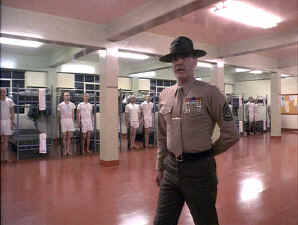

|
Full Metal
Jacket/B, C
|
|
Warner/1987/117/FS
1.33 |
From the brilliance and intensity of its basic training section, Full
Metal Jacket slows to a deliberate and aimless pace once it arrives in
Vietnam. True, the precision with which director Stanley Kubrick dissects
and condenses the basic training experience is nothing short of amazing.
Still, Full Metal Jacket never realizes the potential of the
brilliant first half. From the very opening montage of basic military buzz cuts
courtesy of an electric shear, Kubrick finds an ironic tone, that it at
once funny and pathetic.
 |
|
Hartman parades in the barracks.
©Warner |
Basic
training is driven by the constant fierce in-your-face banter of drill
sergeant Hartman. Hartman spits Marine, breathes Marine, is Marine. With a
pitiless self-righteousness, Hartman drives these Marine trainees through
the hoops of fire that mold men into fighting machines. If you can’t cut
it through the basic training horrors devised by Hartman and others of his
ilk, you’ll never survive the perils of a war. Such is the philosophy of
basic training. Weed out the weak ones, turn flesh into steel, and drive
the emotions on the small precise path of a bullet traveling toward a
kill.
While the Vietnam scenes do ring true, especially
the press related details, the sketchy nature and clearly unfinished story
are not satisfying. Policy meetings regarding what can be said in articles
and what observations and buzz phrases to use were common practice in
Vietnam. Even the irreverence with which Joker treats the meetings and
edicts rings true. The portrayal of the lieutenant in charge of Joker’s
press team plays out of tune, however, and the confrontation with the
colonel in the field is simply an awkward embarrassment.
Vincent D’Onofrio gives a frightening
performance as Private Gomer Pyle. One is never sure what direction this
character will take. Mostly pathetic, the young soldier begins to lose
touch with reality and then hardens into something beyond human. R. Lee
Ermey makes you recoil from the intensity of Sergeant Hartman.
Matthew Modine looks an unlikely candidate for the Marine Corps, but he is
effective in the role of Joker.
Full Metal Jacket doesn’t look very good
on DVD. Many backgrounds are blown out and cause potential power supply
distortion problems. The image does not have the piercing sharpness that
should accompany Kubrick’s perspicacious filmmaking. I wanted to look
into and through the eyes of these players but I felt the weak transfer
presented a barrier to the depth of feeling the character must be
experiencing. Some of the difficult Vietnam lighting situations,
especially those tinted with an overall red, are especially soft focused
and the color lacks tightness. Kubrick’s favored mono sound is
clear enough though with a slightly compressed range. |
|
|
|

Selections from the Feature
Archive include articles on Akira Kurosawa, Blonde Bimbos, Frank Darabont, Steven Culp, John Herzfeld or Vietnam: The Hollywood Pariah, and many
more....
Vietnam: The Hollywood Pariah

During World War II, Hollywood pumped out war movies one after the other.
Vietnam was was another story. As far as Hollywood was concerned it was a
pariah.

The Movie Poster Archive
includes extensive poster images from the films of stars like Susan
Hayward, Kirk Douglas, Katharine Hepburn and many more. Our featured
star is Tyrone Power.
 
ISF Course Instructors Jim Burns and Kevin Miller are hosting the Digital Film Forum. Join
professionals and enthusiasts for lively home theater discussion.

The National Film Preservation Foundation (NFPF) is the
nonprofit organization created by the U.S. Congress to save America's film
heritage.

BargainFlix doesn't sell movies! We just tell you where to get them
for the best price! DVD reviews, giveaways and more.

ISF Monitor
Calibrations in the Tristate New York area. Lots of hardware
info and frequent hardware peaks from video expert Kevin Miller. They may
be judgmental, but that's the point, isn't it. Lots of DVD reviews plus
news and more.
 Have you visited Home Theater Talk
lately? One of the friendliest places on the Net for Home Theater and DVD
discussion, you can get help for installation problems or simply share
your opinions with other Vidiots. Have you visited Home Theater Talk
lately? One of the friendliest places on the Net for Home Theater and DVD
discussion, you can get help for installation problems or simply share
your opinions with other Vidiots.
|